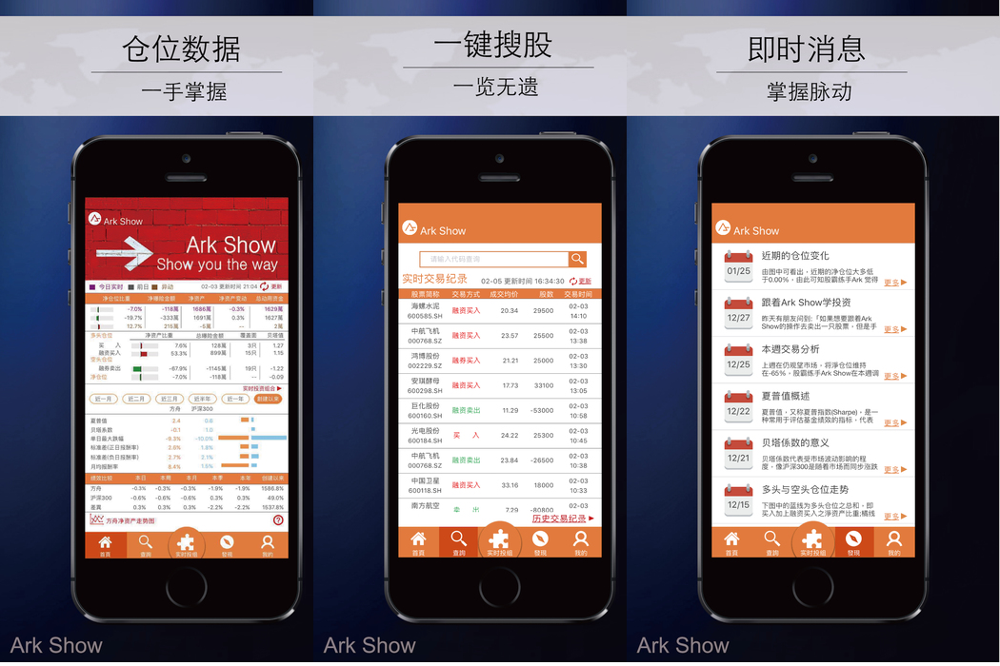

附錄
作品集 & 相關文件
負責項目 或是 詳細資料請點擊圖片

Ark Show股霸練手
任職公司：AI Rasing Up - Airu
Ark Show股霸練手用人工智能模擬避險基金的投資策略，為你做示範。Ark Show股霸練手及時且完全地展示人工智能的模擬持股與交易內容，能追溯從第一天起的每一次模擬交易。所累積的資產淨值是可以被重復驗證的。
並且有專人為你深入淺出地說明人工智能的投資判斷，如同球評為你帶到該關注的細節。
使用語言：Swift3
使用框架、工具：Realm資料庫,極光推播
IOS App 01